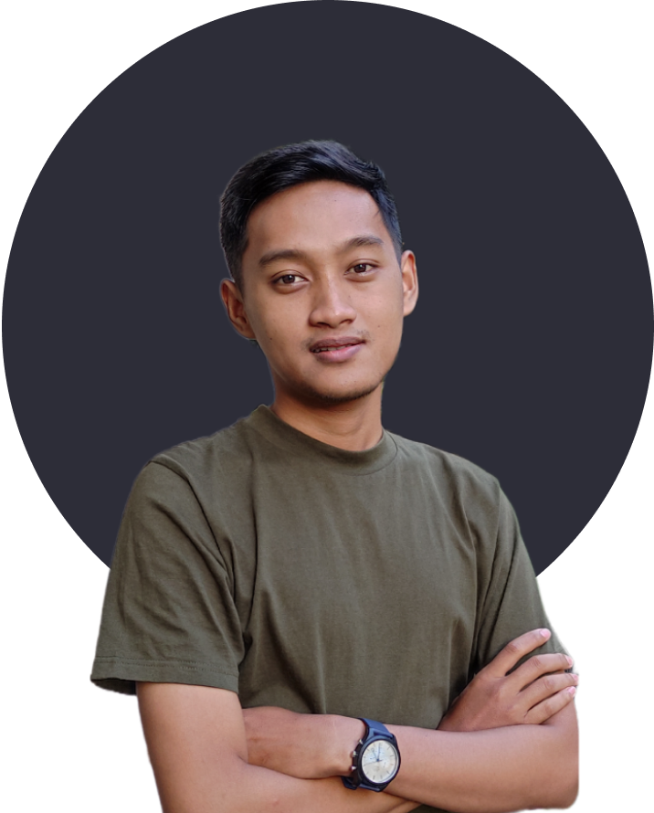

About Me

Hello! I am Abyan and I enjoy writing code with a cup of coffee. I
started doing code in 2018, on my first year of college at Gadjah
Mada University, Computer Science major.
In my third year of college, I decided to put my effort more into
Software Engineering, espescially Backend. No particular reason, I
just enjoyed backend more than frontend :).
Today, I am compiling thesis for my bachelor degree while also
doing internship at
Tokopedia.